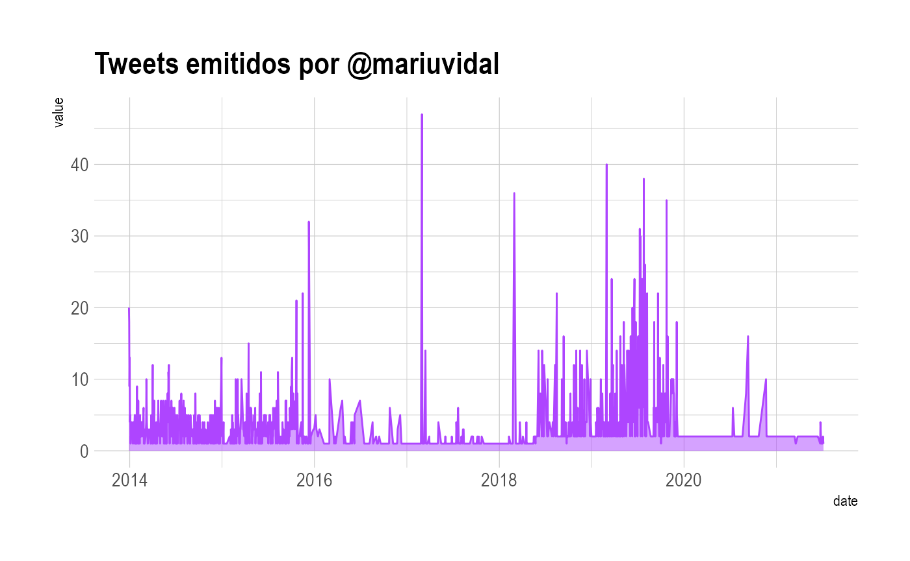
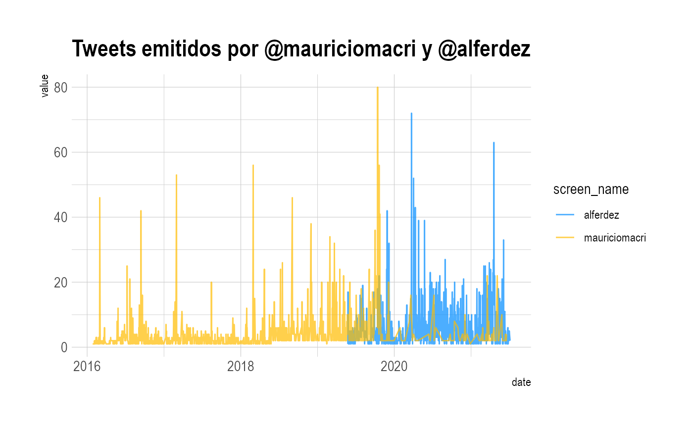

Presentation
Presentation.RmdInstalación:
- Instalamos el paquete y otras librerias necesarias:
Descargá la data de politicxs:
- Lista de usuarios que contiene Politicxs en twitter
Podemos ver la lista que tenemos de funcionarios con politicxs_data:
head(politicxs_data)
#> # A tibble: 6 x 9
#> user_id screen_name category description name gender followers_count
#> <chr> <chr> <chr> <chr> <chr> <chr> <dbl>
#> 1 1204088… A_Carambia deputies "Diputado Naci… Antoni… M 183
#> 2 8417571… Adriana_Rua… deputies "Vecina de Deá… Adrian… F 1206
#> 3 1277698… AgenciaAfi national… "Cuenta oficia… Agenci… ND 2508
#> 4 1661771… Agricultura… national… "Cuenta oficia… Minist… ND 162332
#> 5 1752732… AgustinLaje others "Escritor. Lic… Agustí… M 457882
#> 6 39276894 AidaAyala deputies "Diputada Naci… Aída A… F 8360
#> # … with 2 more variables: profile_image_url <chr>, country <chr>Timeline de usuarios:
- Podemos descargar sobre un usuario determinado con la función get_timeline_data
timeline_mev <- get_timeline_data("mariuvidal")
head(timeline_mev,2)
#> user_id status_id created_at screen_name
#> 1 109040582 1000000957688809984 2018-05-25 13:09:42 mariuvidal
#> 2 109040582 1000000957688811520 2018-05-25 13:09:42 mariuvidal
#> text
#> 1 🇦🇷¡Feliz Día de la Patria! Que este #25DeMayo nos encuentre unidos para seguir construyendo una Argentina mejor. 🇦🇷
#> 2 🇦🇷¡Feliz Día de la Patria! Que este #25DeMayo nos encuentre unidos para seguir construyendo una Argentina mejor. 🇦🇷
#> source is_quote is_retweet favorite_count retweet_count lang
#> 1 Twitter for iPhone FALSE FALSE 9025 2050 es
#> 2 Twitter for iPhone FALSE FALSE 9067 2062 es
#> status_url name
#> 1 https://twitter.com/mariuvidal/status/1000000957688811520 María Eugenia Vidal
#> 2 https://twitter.com/mariuvidal/status/1000000957688811520 María Eugenia Vidal
#> urls_url urls_t_co reply_to_status_id reply_to_user_id reply_to_screen_name
#> 1 <NA> <NA> <NA> <NA> <NA>
#> 2 <NA> <NA> <NA> <NA> <NA>
#> mentions_user_id mentions_screen_name retweet_status_id retweet_text
#> 1 <NA> <NA> <NA> <NA>
#> 2 <NA> <NA> <NA> <NA>
#> retweet_created_at retweet_source retweet_favorite_count
#> 1 <NA> <NA> <NA>
#> 2 <NA> <NA> <NA>
#> retweet_retweet_count retweet_user_id retweet_screen_name retweet_name
#> 1 <NA> <NA> <NA> <NA>
#> 2 <NA> <NA> <NA> <NA>
#> retweet_followers_count retweet_friends_count retweet_statuses_count
#> 1 <NA> <NA> <NA>
#> 2 <NA> <NA> <NA>
#> retweet_location retweet_description retweet_verified
#> 1 <NA> <NA> <NA>
#> 2 <NA> <NA> <NA>- E incluso saber cuándo fue que más twitteó:
library(hrbrthemes)
timeline_mev %>%
group_by(date=as.Date(created_at)) %>%
summarise(value = n()) %>%
ggplot( aes(x=date, y=value)) +
geom_area(fill="#ae45ff", alpha=0.5) +
geom_line(color="#ae45ff") +
ggtitle("Tweets emitidos por @mariuvidal") +
theme_ipsum() c. Podemos hacerlo comparando la cantidad de tweets de más de un usuario:
timeline_af_mm <- get_timeline_data(screen.name = c("alferdez", "mauriciomacri"))
head(timeline_af_mm, 2)
#> user_id status_id created_at screen_name
#> 1 149991703 1132431445392265217 2019-05-25 23:41:10 alferdez
#> 2 149991703 1132445599293464577 2019-05-26 00:37:25 alferdez
#> text
#> 1 Desatemos la esperanza.\nVamos a volver para ser mejores.\n#EntreTodos\n#EntreTodas https://t.co/saKlixKj59
#> 2 “Con Néstor entramos al mismo laberinto que tenemos que entrar ahora el diez de Diciembre. Yo estuve en ese laberinto y supe cómo salir. Vamos a salir todos trabajando codo a codo” @alferdez @CFKArgentina #EsConTodos #EsConTodas #25deMayo https://t.co/GPovmtEZI7
#> source is_quote is_retweet favorite_count retweet_count lang
#> 1 Twitter for iPhone FALSE FALSE 8286 1847 es
#> 2 Twitter for iPhone FALSE TRUE 0 391 es
#> status_url name
#> 1 https://twitter.com/alferdez/status/1132431445392265217 Alberto Fernández
#> 2 https://twitter.com/alferdez/status/1132445599293464577 Alberto Fernández
#> mentions_user_id mentions_screen_name retweet_status_id
#> 1 <NA> <NA> <NA>
#> 2 981230259533221888 GrupoCallao 1132440578191437825
#> retweet_text
#> 1 <NA>
#> 2 “Con Néstor entramos al mismo laberinto que tenemos que entrar ahora el diez de Diciembre. Yo estuve en ese laberinto y supe cómo salir. Vamos a salir todos trabajando codo a codo” @alferdez @CFKArgentina #EsConTodos #EsConTodas #25deMayo https://t.co/GPovmtEZI7
#> retweet_created_at retweet_source retweet_favorite_count
#> 1 <NA> <NA> <NA>
#> 2 2019-05-26 00:17:28 Twitter for Android 1388
#> retweet_retweet_count retweet_user_id retweet_screen_name retweet_name
#> 1 <NA> <NA> <NA> <NA>
#> 2 391 981230259533221888 GrupoCallao Grupo Callao
#> retweet_followers_count retweet_friends_count retweet_statuses_count
#> 1 <NA> <NA> <NA>
#> 2 17745 242 1619
#> retweet_location retweet_description retweet_verified reply_to_status_id
#> 1 <NA> <NA> <NA> <NA>
#> 2 FALSE <NA>
#> reply_to_user_id reply_to_screen_name urls_url urls_t_co
#> 1 <NA> <NA> <NA> <NA>
#> 2 <NA> <NA> <NA> <NA>- Además, podemos graficar en qué periodos de tiempos más twittearon ambos:
timeline_af_mm %>%
group_by(date=as.Date(created_at), screen_name) %>%
summarise(value = n()) %>%
ggplot( aes(x=date, y=value)) +
geom_line(aes(color = screen_name), alpha = 0.7) +
ggtitle("Tweets emitidos por @mauriciomacri y @alferdez") +
scale_color_manual(values = c("#008cff", "#ffbb00")) +
theme_ipsum()
Friends & Followers:
4.a. Podemos ver cuántos amigos tiene cada uno con la función get_friends_followers:
foll_friends_mv_hl <- get_friends_followers(screen.name = c("mariuvidal", "horaciorlarreta"))
foll_friends_mv_hl$date <- as.Date(foll_friends_mv_hl$date)
head(foll_friends_mv_hl,2)
#> screen_name date followers_count friends_count listed_count
#> 1 mariuvidal 2020-12-25 1623740 558 1947
#> 2 mariuvidal 2021-02-11 1623073 556 1956
#> statuses_count favourites_count account_created_at
#> 1 7516 487 2010-01-27 19:56:18
#> 2 7516 487 2010-01-27 19:56:18- E incluso podemos graficarlo:
library(sknifedatar)
library(tidyr)
plot_foll_friends <- foll_friends_mv_hl %>%
gather(key = "tipo_interaccion", value = "value", c("friends_count", "followers_count")) %>%
mutate(tipo_interaccion = case_when(
tipo_interaccion == "friends_count" ~ "Cantidad de Friends",
T ~ "Cantidad de Followers")
) %>%
arrange(tipo_interaccion) %>%
select(screen_name, date, tipo_interaccion, value) %>%
nest(nested_column=-tipo_interaccion) %>%
mutate(
.plot = purrr::map(nested_column, ~
ggplot(.x, aes(x=date, y=as.numeric(value))) +
geom_line(aes(color=screen_name)) + theme_minimal() +
scale_color_manual(values = c("#ffbb00", "#ae45ff")) +
labs( y = "Cantidad")
)
)
plot_foll_friends$.plot[1]
#> [[1]]
Cantidad de Followers

Cantidad de Friends

Redes
5.a. Podemos obtener la data de redes (para un periodo de tiempo y que se actualiza de manera mensual):
others_network <- get_network_data(category = "others") 5.b. También podemos hacer una nube con la info obtenida:
library(igraph)
#>
#> Attaching package: 'igraph'
#> The following objects are masked from 'package:dplyr':
#>
#> as_data_frame, groups, union
#> The following objects are masked from 'package:purrr':
#>
#> compose, simplify
#> The following object is masked from 'package:tidyr':
#>
#> crossing
#> The following object is masked from 'package:tibble':
#>
#> as_data_frame
#> The following objects are masked from 'package:stats':
#>
#> decompose, spectrum
#> The following object is masked from 'package:base':
#>
#> union
library(networkD3)
others_network <- others_network %>%
left_join(politicxs_data) %>%
select(screen_name_from = screen_name, retweet_user_id, value) %>%
left_join(politicxs_data, by = c("retweet_user_id"= "user_id")) %>%
select(from=screen_name_from, to = screen_name, value) %>%
drop_na()
#> Joining, by = "user_id"
p <- simpleNetwork(others_network, height="100px", width="100px")
p